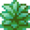
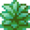

You are here:
Home / Tools / Shiny Hunting Spots
Kanto
Horde
Route 15: 
Four Island: 
Single
Viridian Forest:  (
( )
)
Route 3:  ()
()
Route 24:  ()
()
Johto
Horde
Dragon's Den:  (
( ) /
) /  ()
()
Mt. Silver:  () /
() /  ()
()
Single
Hoenn
Horde
Route 114: 
Route 111: 
Sootopolis City:
Artisan Cave:  ()
()
Single
Meteor Falls (Inner Chamber):  /
/ 
Petalburg Woods:  /
/  /
/  ()
()
Sinnoh
Horde
Single
Unova
Horde
Lostlorn Forest:  (
( Reactive Gas)
Reactive Gas)
Route 10:  (Dark Grass)
(Dark Grass)
Celestial Tower:  ()
()
Guidance Chamber:  () /
() /  ()
()
Victory Road:  /
/ 
Single
Route 12: (
( ) /
) /  ()
()